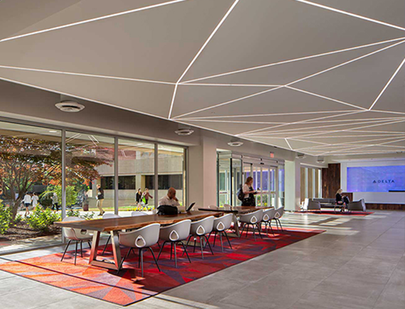

我们成立于 2015 年，核心团队由资深可靠性工程（RAMS）专家、运筹学博士及资深软件架构师组成。
在过去的时间里，我们发现许多重大工程项目在后期维保阶段面临着严重的成本失控与备件冗余。我们致力于通过数字化的修理级别分析（LORA）工具，将复杂的工程逻辑转化为清晰的决策路径。

成功开发基于全寿命周期成本（LCC）的非线性优化算法。
软件正式进入民用航空维护领域试运行。
深度适配 GJB 2993A 标准，获得相关单位好评。
签约 多家大型工业合作伙伴。
“用算法驱动维保决策，为中国高端制造提供最优保障策略支持，消灭每一分不必要的维修浪费。”